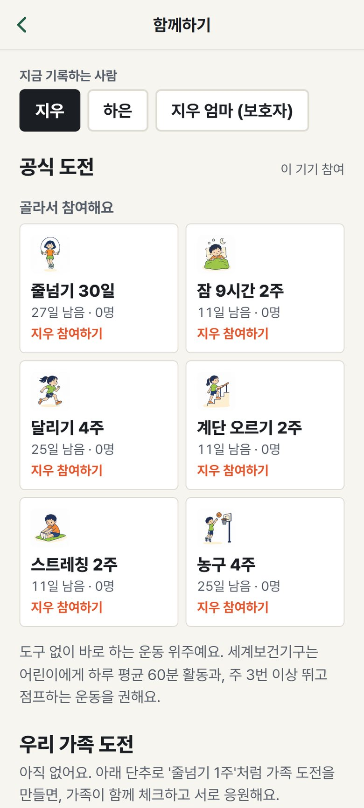
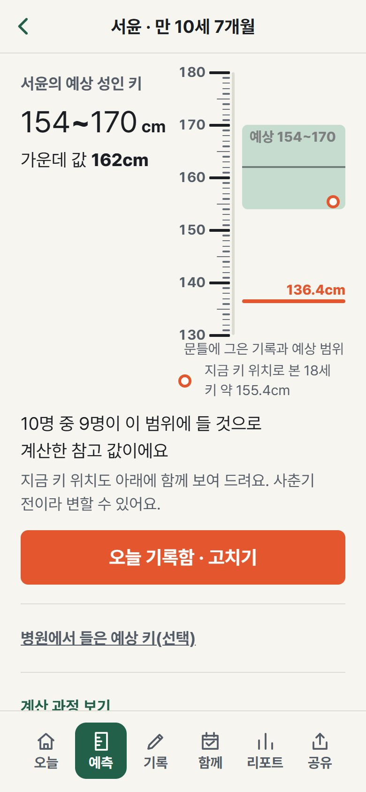
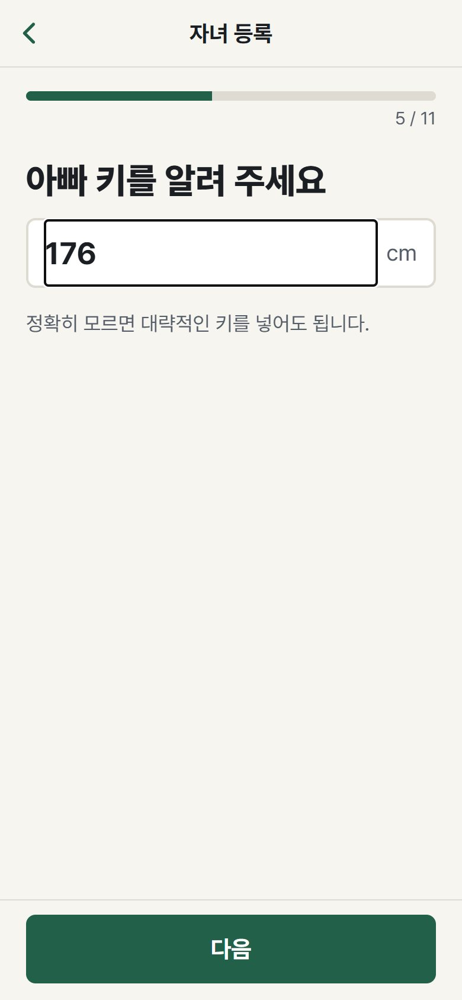
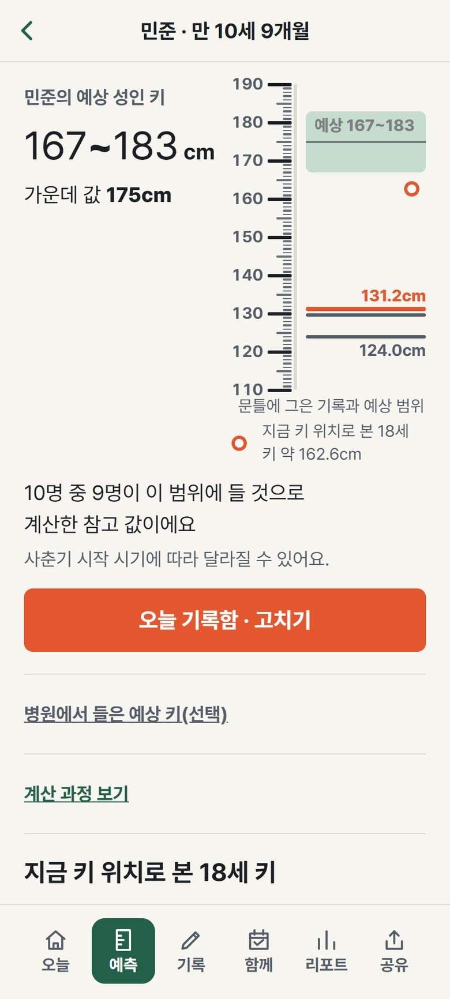
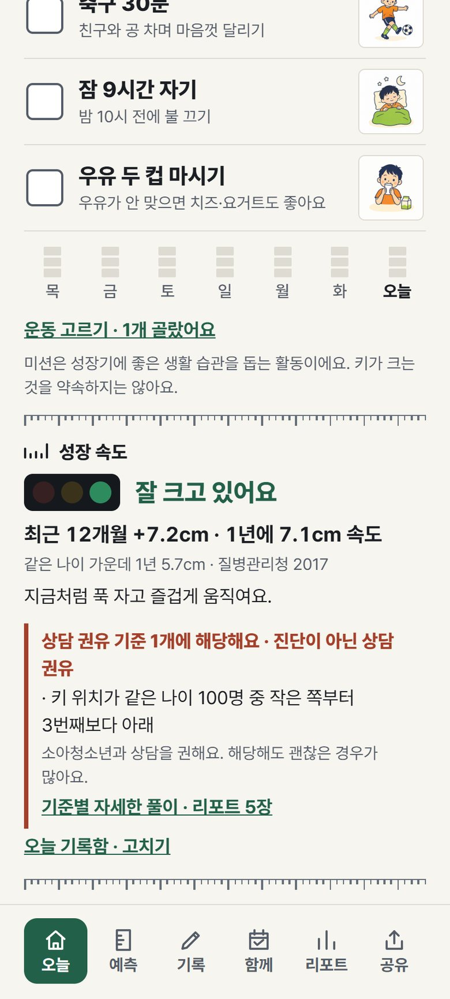
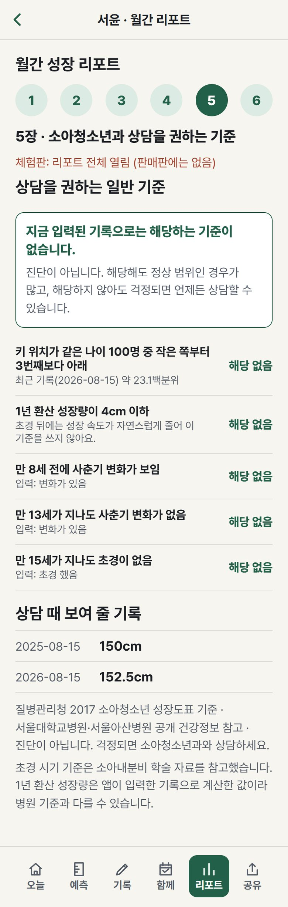
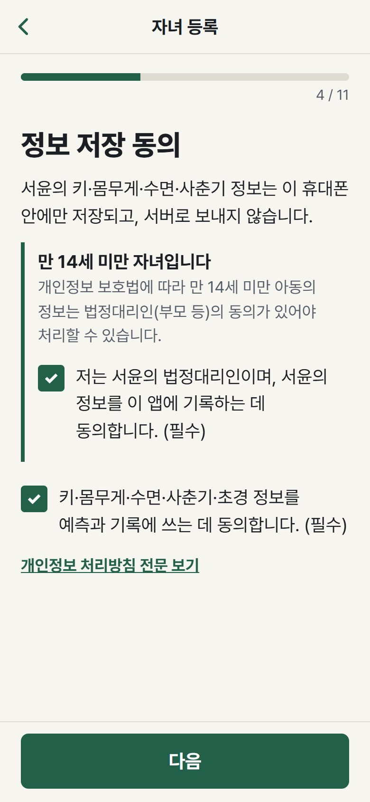

문틀에 긋던
아이 키를,
근거 있는 숫자로.
키록은 부모 키와 아이가 자라는 기록으로 어른이 됐을 때의 키를 한 숫자가 아닌 범위로 보여 주는 앱입니다. 계산 방법과 출처를 모두 공개하고, 결과는 무료입니다.
구글 플레이 2026년 12월 출시 예정. 지금은 휴대폰 인터넷 창에서 웹 체험판을 쓸 수 있어요.


예측은 이렇게 계산합니다
키록 앱과 똑같은 식입니다. 부모 키를 넣어 보세요. 입력한 값은 이 화면에서만 계산되고 어디에도 보내지 않습니다.
이 값은 부모 키만으로 본 참고 범위이며 진단이 아닙니다. 아이의 지금 키·사춘기·초경 정보가 들어가면 앱에서 따로 함께 보여 드립니다. 성장이 걱정되면 소아청소년과 전문의와 상담해 주세요.
| 무엇을 | 쓰는 숫자 | 어디서 왔나 |
|---|---|---|
| 부모 키가 아이 키에 이어지는 정도 | 0.369 | 부모 키 합이 1cm 크면 아이 성인 키는 0.369cm 큽니다(95% 신뢰구간 0.338~0.399). Kim S, Yoo JH, Chueh HW. BMJ Paediatrics Open 2024. 국민건강영양조사 2010~2019의 젊은 성인 2,586명과 그 부모. 키록은 이 기울기만 논문에서 가져옵니다. |
| 가운데 기준 | 남 173.6cm 여 160.6cm | 기준점은 지금 세대로 다시 맞췄습니다. 논문 원식(아들 54.255 + 0.369 × 부모 키 합, 딸 41.242 + 0.369 × 부모 키 합)은 1950~60년대생 부모 자료라 지금 부모 세대의 아이를 약 4cm 높게 봅니다. 그래서 질병관리청 2017 소아청소년 성장도표의 18세 중앙값을 가운데로, 지금 부모 세대 평균 키 합 334.2cm(173.6 + 160.6)를 기준점으로 둡니다. |
| 예측 범위 | 가운데 값 ±8cm | 원 연구의 평균 오차(평균제곱오차 23.8, 약 4.9cm)로 계산한 90% 범위. 10명 중 9명이 들어가는 폭입니다. |
| 지금 키 위치 | 개월마다 | 질병관리청 2017 성장도표의 개월별 키 분포(LMS 방법, Cole·Green 1992)로 같은 나이·성별 안의 위치를 구하고, 그 위치를 18세까지 이었을 때의 키를 나란히 보여 줍니다(만 3세~18세 전). |
| 딸의 초경 뒤 남은 성장 | 평균 6.6cm | 초경 뒤 4년 동안 평균 6.6cm, 그중 첫 1년 3.8cm. 초경이 11세 전이면 8.2cm, 13세 뒤면 4.4cm. Gaete 외, Hormone Research in Paediatrics 2025(칠레 여아 534명). |
| 상담을 권하는 속도 | 1년 4cm 이하 | 만 4세 이후, 6개월 넘게 떨어진 두 기록으로 본 1년 성장량. 서울아산병원 성장클리닉 안내의 '연 4cm 이하'를 참고한 앱 계산 기준입니다. |
키록은 현행 질병관리청 2017 소아청소년 성장도표를 쓰며, 2027 개정판(2027년 12월 말 공표 예정)이 나오면 바꿔 반영합니다. 질병관리청 안내
왜 '정확도 몇 %'라고 하지 않나요
무엇을 맞혔다는 건지 정할 수 없는 숫자는 쓰지 않습니다. 대신 '10명 중 9명이 들어가는 범위'처럼 확인할 수 있는 말로 보여 드립니다. 부모 키가 설명하는 몫은 30% 안팎이고, 나머지는 아이마다 다릅니다.
왜 예전 공식을 그대로 쓰지 않나요
흔히 쓰는 (아빠 + 엄마 ± 13) ÷ 2 식은 한국 성인 키를 남 4.86cm, 여 4.81cm 낮게 봤습니다. 반대로 한국 연구식을 그대로 쓰면 지금 부모 세대에서는 약 4cm 높게 나옵니다. 그래서 기울기만 연구에서 가져오고 가운데는 지금 세대에 맞췄습니다.
두 값을 억지로 합치지 않습니다
부모 키 범위와 지금 키 위치로 본 값은 따로, 나란히 보여 줍니다. 둘을 하나로 합칠 근거 자료를 확인하기 전까지는 합친 숫자를 내세우지 않습니다.
앱에서는 이렇게 씁니다
가입 없이 시작해 2~3분이면 첫 결과가 나옵니다. 그다음부터는 한 달에 한 번 키를 재고, 하루 세 가지 생활 습관을 체크합니다.
아이 등록 11단계
성별, 부르는 이름(별명), 태어난 해와 달, 보호자 동의, 아빠·엄마 키를 넣으면 결과가 나옵니다. 지금 키·몸무게·잠·사춘기·초경은 아는 만큼만 넣고 건너뛸 수 있습니다.
- 실명·생일 날짜는 묻지 않습니다.
- 만 14세 미만은 보호자 동의 뒤에만 기록합니다.

예측 결과: 범위와 가운데 값
문틀 눈금 위에 예상 범위가 띠로, 지금 키가 연필 선으로 그려집니다. 지금 키 위치로 이어 본 18세 키도 동그라미로 함께 보입니다. 결과는 무료이고 가입 전에도 숨기지 않습니다.

오늘 화면: 미션 세 개와 성장 속도
운동 하나, 잠 9시간, 식습관 하나를 체크하면 연속 기록이 쌓입니다. 아래에는 성장 속도 신호등이 있습니다. 미션은 성장기에 좋은 생활 습관을 돕는 활동이며, 키가 크는 것을 약속하지는 않습니다.

함께하기: 가족·친구와 같은 도전
공식 도전 여섯 가지(줄넘기 30일, 잠 9시간 2주, 달리기 4주, 계단 오르기 2주, 스트레칭 2주, 농구 4주)에 참여하거나, 우리 가족 도전을 만들어 초대 코드로 부를 수 있습니다. 응원은 정해진 문구로만 보냅니다.
월간 리포트와 병원에 보여 줄 한 장
키 위치 변화(1장)와 사춘기·초경 시기 안내(4장)는 무료입니다. 성장 속도 해석, 기록이 쌓이며 달라지는 예측, 상담 기준 비춰 보기, 병원·가족에게 보여 줄 한 장 PDF는 유료 리포트에 있습니다.

성장 속도 신호등
최근 기록 사이에 자란 키를 1년으로 환산해, 같은 나이 아이들의 가운데 성장량(질병관리청 2017 성장도표)과 견줍니다. 병 이름이나 뼈 나이는 말하지 않고, 필요한 때 상담만 권합니다.
같은 나이 아이들은 1년에 얼마나 자랄까
질병관리청 2017 성장도표 가운데 곡선으로 계산한 1년 성장량입니다. 아이마다 다르며, 신호등은 이 값과 우리 아이 기록을 견줍니다.
사춘기 끝 무렵처럼 가운데 아이도 1년 4cm 이하로 느려지는 나이에서는 빨강 대신 '속도가 줄어드는 시기'로 안내합니다.
아이 정보는 적게 받고, 휴대폰 안에 둡니다
키록은 회원 가입이 없습니다. 아이의 키와 부모 키는 서버로 보내지 않습니다.
- 받지 않는 것실명, 생일 날짜, 전화번호, 이메일, 위치
- 휴대폰 안에만아이 키·몸무게, 부모 키, 잠, 사춘기·초경 기록, 리포트
- 함께하기를 켤 때만도전에 필요한 별명·성별·태어난 해와 달, 운동·잠 체크가 서버에 올라갑니다.
- 만 14세 미만보호자(법정대리인) 동의를 받은 뒤에만 기록합니다.
- 지우기'이 기기의 모든 기록 지우기' 한 번, 또는 앱 삭제로 모두 지워집니다.

요금
예측과 기록, 상담 권유 판정은 처음부터 끝까지 무료입니다. 더 자세한 리포트가 필요할 때만 고르세요. 결제는 구글 플레이 결제로만 받으며, 출시 전인 지금은 결제가 없습니다. 결제 7일 안에 유료 리포트를 열지 않았다면 전액 환불해 드립니다(환불 기준 자세히).
| 무엇이 열리나 | 무료언제나 | 2,900원리포트 한 번 | 39,000원평생권, 한 번 결제 | 19,900원연 구독 | 4,900원월 구독 |
|---|---|---|---|---|---|
| 예측 결과·키 기록·성장 곡선·백업 | |||||
| 성장 속도 신호등·상담 권유 판정 | |||||
| 오늘 미션·운동 고르기 22가지·함께하기 | |||||
| 리포트 1장 키 위치 변화, 4장 사춘기·초경 안내 | |||||
| 리포트 2·3·5장: 성장 속도 해석, 예측 변화, 상담 기준 풀이 | 없음 | 이번 달 1회 | 매달 | 매달 | 매달 |
| 리포트 6장: 병원·가족에게 보여 줄 한 장 PDF·이미지 | 없음 | 이번 달 1회 | 매달 | 매달 | 매달 |
| 아이 여러 명 | — | 첫째 아이만 | 모두 | 모두 | 모두 |
| 기간 | 기한 없음 | 한 번 | 기한 없음 | 1년, 자동 갱신 | 1달, 자동 갱신 |
무료 0원
예측 결과, 키 기록·성장 곡선, 성장 속도 신호등과 상담 권유 판정, 오늘 미션, 운동 고르기, 함께하기, 리포트 1·4장, 백업.
리포트 한 번 2,900원
이번 달 자세한 리포트(2·3·5·6장) 1회. 처음 등록한 아이 몫.
평생권 39,000원
한 번 결제, 기한 없음. 매달 새 리포트, 아이 여러 명.
연 구독 19,900원
매달 새 리포트, 아이 여러 명. 자동 갱신, 언제든 해지. 한 달로 나누면 약 1,660원.
월 구독 4,900원
매달 새 리포트, 아이 여러 명. 자동 갱신, 언제든 해지.
표시는 포함이라는 뜻입니다. 구독 해지와 환불은 구글 플레이 규정을 따릅니다. 환불 안내
만든 곳
키록은 꿈의 색깔이 만들고 운영합니다. 부모가 병원에 가기 전에 집에서 차분히 기록을 쌓고, 필요할 때 그 기록을 들고 상담받을 수 있게 돕는 것이 목표입니다.
숫자 하나를 바꿀 때마다 근거와 이유를 결정 기록으로 남기고, 계산식은 자동 시험으로 확인합니다. 앱이 내는 모든 판정은 진단이 아니며, 의료 판단은 소아청소년과 전문의의 몫입니다.
- 상호꿈의 색깔(개인사업자)
- 사업자등록번호223-38-01338
- 통신판매업 신고신고 예정
- 문의문의 페이지에서 자동 상담과 문의 남기기를 쓸 수 있습니다.